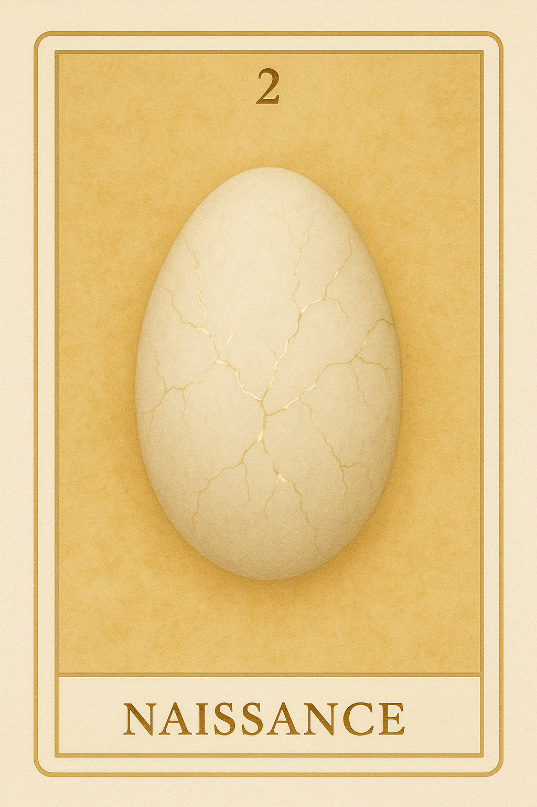
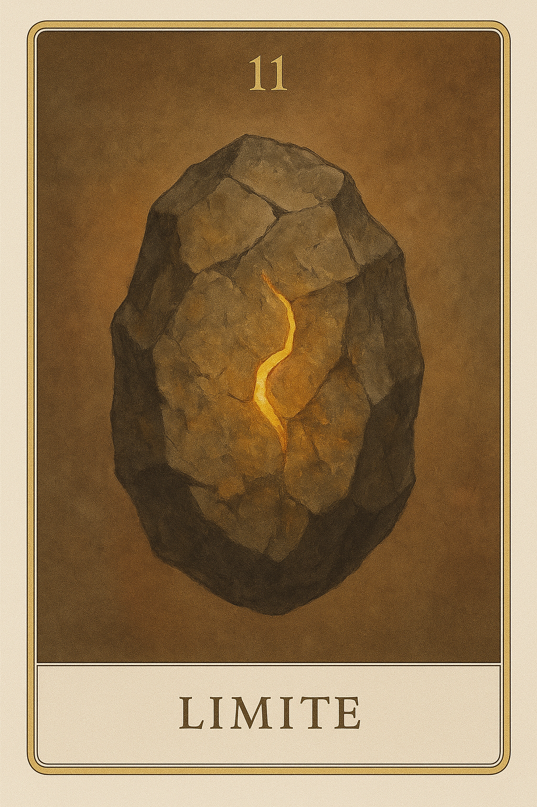
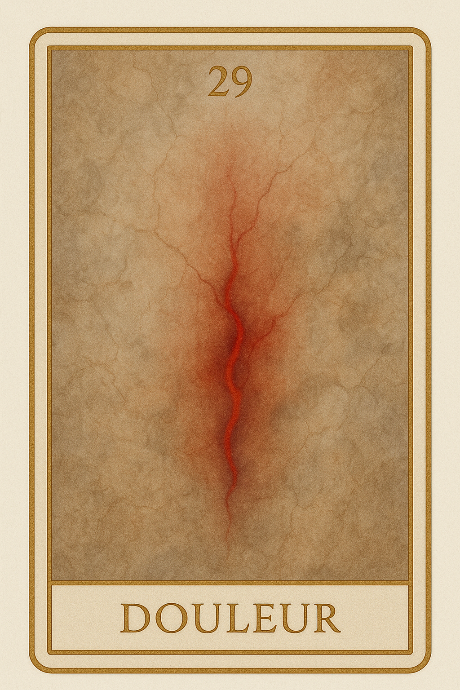
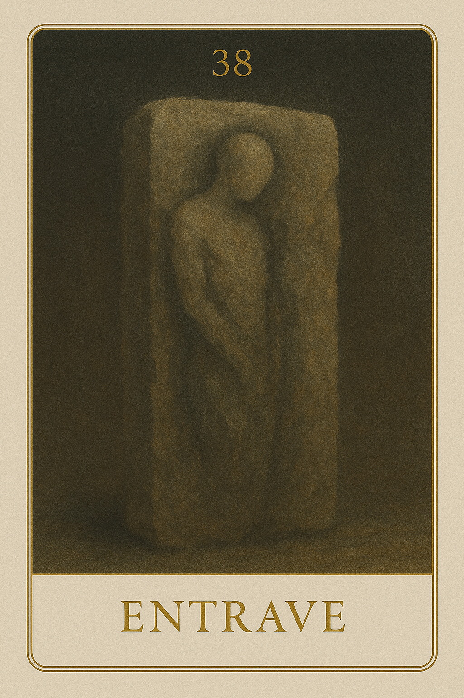
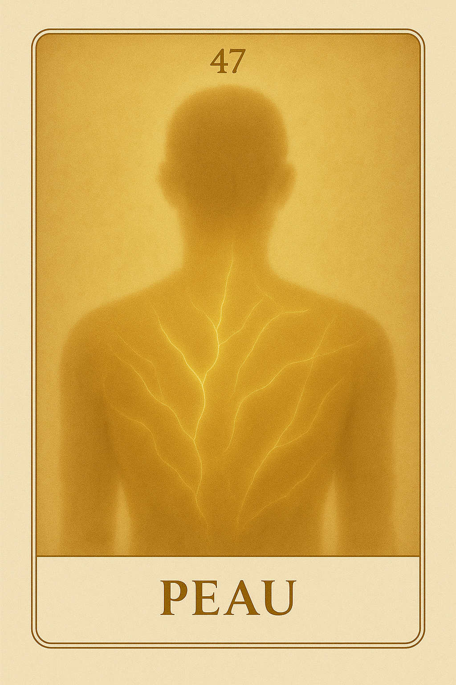
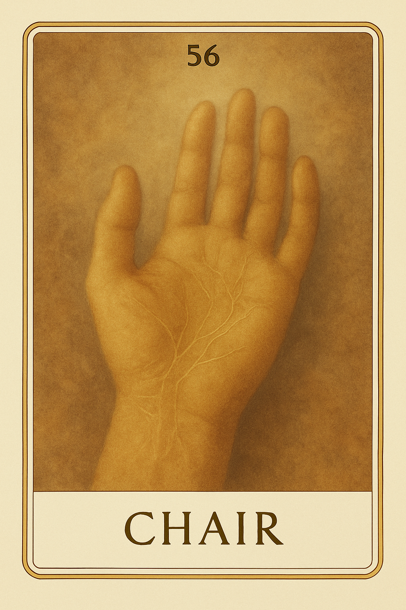
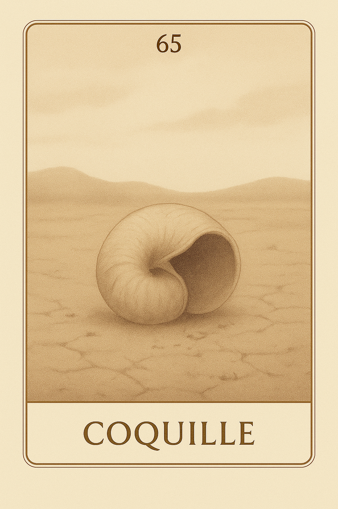
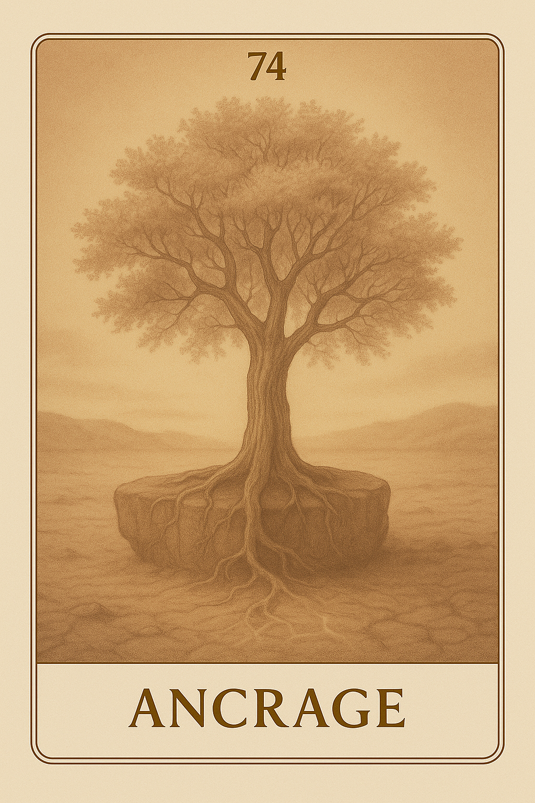

Famille 2 – Geb (Terre)
La famille 2 de l’oracle Seshat explore la manière dont l’esprit s’incarne dans la matière. Sous l’égide de Geb, ces cartes révèlent les structures profondes, les limites fondatrices et l’équilibre subtil entre présence et forme. Elles invitent à reconnaître les appuis invisibles, les lois intérieures qui soutiennent l’élan de l’être, et la sagesse de l’ancrage.
Carte 2 – Naissance
Mots-clés : ancrage spirituel, début incarnation, conscience dans la matière, premier pas dans la matière, lumière qui s’ancre
Chiffre caché : 200
Lecture inversée : 0 → 0 → 2
Divinité principale : Geb
Planète secondaire : Soleil
Divinité secondaire : Râ
Interprétation de la carte 2 : Naissance (droite)
Lecture intuitive rapide
L’esprit regarde l’instant où l’être prend forme. Ce n’est plus une lumière suspendue dans l’oubli, mais un poids subtil qui cherche où s’ancrer. C’est un pas vers la densité, un frisson à la surface du monde. Le corps n’est pas encore là, mais la gravité existe déjà. Il n’y a pas d’action, pas encore de désir. Seulement une conscience fragile, étonnée d’être là. Ce que l’esprit montre à l’égo, c’est que l’origine n’est pas dans le ciel, mais dans ce moment où l’âme accepte de tomber, où la lumière devient silence, et le silence devient sol.
1. Caractère de la personne
L’esprit s’incarne doucement, sans savoir encore comment faire. Il n’est pas là pour agir, mais pour être ici. L’égo doit sentir son propre poids, sans lutte. Le monde commence, et cela suffit. Il n’y a pas encore de rôle à jouer. La conscience s’ancre.
2. Plan affectif
Rien n’est attendu, rien n’est donné. L’amour n’a pas encore de visage. C’est une chaleur diffuse, un désir encore sans objet, comme un soleil intérieur qui ne cherche pas à brûler. C’est la tendresse de l’existence, avant le lien.
5. Plan spirituel
L’esprit entre dans la matière. Ce n’est pas une chute, mais un passage. Le divin se fait lourd, sans se perdre. Ce qui brille, maintenant, c’est la patience du commencement. Le soleil n’éclaire plus d’en haut, il réchauffe de l’intérieur.
Carte 2 : Naissance (inversée)
1. Caractère de la personne
L’esprit refuse d’attendre. L’égo veut comprendre trop tôt, forcer la forme, devancer l’appel. Mais la matière ne se livre pas à la hâte. Ce qui devait s’ancrer s’éparpille. L’identité se construit sur du sable.
2. Plan affectif
Le lien est forcé. L’égo cherche un contact là où seul le silence peut encore répondre. L’amour n’a pas encore germé, et déjà il réclame un fruit. Mais il faut d’abord apprendre à être seul dans la présence.
5. Plan spirituel
La lumière se retire, non par cruauté, mais parce que tu l’as pressée. Ce que tu veux capter s’efface. Il faut laisser la densité s’installer, laisser le divin prendre corps, sans l’invoquer.
Résumé de la carte 2 : Naissance
Naissance est le premier ancrage, le tout début de l’incarnation. C’est la conscience qui accepte de descendre, la lumière qui devient forme, non par chute, mais par choix. C’est le moment sacré où le monde commence à te recevoir. Regarde-toi entrer dans ce monde. Tu ne peux pas encore savoir. Mais tu peux sentir que tu es là. Et cela suffit, pour commencer.
Carte 11 – Limite
Mots-clés : : accepter ses limites, densité intérieure, résistance du corps, ancrage dans la matière, obstacle constructif
Chiffre caché : 227
Lecture inversée : 7 → 2 → 2
Divinité principale : Geb
Planète secondaire : Terre
Divinité secondaire : Geb
Interprétation de la carte 11 : Limite (droite)
Lecture intuitive rapide
Ce n’est pas un mur. Ce n’est pas un piège. C’est un point de contact avec la matière, un lieu où le corps se rend compte de sa propre densité. Tu ne peux pas traverser. Pas encore. Ce n’est pas le moment d’expliquer, ni de transcender. C’est le moment d’habiter. De sentir. De reconnaître ce qui tient, ce qui pèse, ce qui freine. La limite n’est pas contre toi. Elle te soutient.
1. Caractère de la personne
Tu te heurtes à une résistance. Elle ne vient pas de l’extérieur. Elle est en toi, dans ton corps, dans ta forme. Tu n’es pas enfermé. Tu es simplement contenu.
2. Plan affectif
Tu ressens quelque chose en toi qui ne bouge pas. Ce n’est pas de l’émotion. C’est une densité intérieure, une présence affective sans direction. Tu n’as pas à la comprendre. Seulement à l’habiter.
5. Plan spirituel
La matière ne nie pas l’esprit. Elle l’absorbe pour l’obliger à devenir réel. Tu ne peux pas t’élever ici : tu dois t’incarner jusque dans tes bords.
Carte 11 : Limite (inversée)
1. Caractère de la personne
Tu refuses de reconnaître la contrainte. Tu veux passer au travers, te projeter plus loin. Mais tant que tu ne respectes pas ce qui te freine, tu ne pourras pas te tenir droit.
2. Plan affectif
Tu attends un ressenti clair, ou une ouverture. Mais tout reste fermé, dense, intérieur. Tant que tu refuses ce calme affectif, tu resteras dans la confusion.
5. Plan spirituel
Tu t’agites pour dépasser la matière. Mais elle ne bougera pas. Elle n’est pas ton obstacle. Elle est le socle de ton esprit. Tant que tu la rejettes, rien ne se révèle.
Résumé de la carte 11 : Limite
Limite est la carte du corps qui se reconnaît comme contenant. Elle ne demande ni dépassement, ni fuite. Elle dit simplement : “Tu tiens dans une forme. Apprends à y être.”
Carte 20 – Friction

Mots-clés : : tension intérieure, mal-être incarné, corps sous pression, résistance émotionnelle, friction avec soi-même
Chiffre caché : 173
Lecture inversée : 3 → 7 → 1
Divinité principale : Geb
Planète secondaire : Jupiter
Divinité secondaire : Amon-Rê
Interprétation de la carte 20 : Friction (droite)
Lecture intuitive rapide
Ton corps parle plus fort que toi. Tu ressens une pression sourde, un inconfort que tu ne sais pas toujours nommer — mais qui te pousse, te raidit, te précipite parfois. Et cette tension, même si tu crois la contenir, s’imprime dans tes gestes, dans ton silence, dans ta manière de tenir ton espace. Ce n’est pas encore un acte. C’est une charge. Une friction entre toi et le monde, entre toi et ta propre forme.
1. Caractère de la personne
Tu es tendu. Ce que tu vis dans ton corps crée une pression constante. Même sans gestes violents, ta présence peut devenir lourde, envahissante, inconfortable. C’est ton propre mal-être qui pousse contre le monde.
2. Plan affectif
Tu ne t’accordes pas assez d’espace. Tu vis ta forme comme une contrainte, et cela crée une dureté dans ta façon d’exister. Ce n’est pas de la colère, mais une friction intérieure, que ton corps transmet aux autres.
5. Plan spirituel
Tu veux avancer, mais tu es en lutte contre ton incarnation. Tant que tu ne reconnais pas cette tension dans ta chair, tu risques de la projeter à l’extérieur. Il faut d’abord l’habiter, sans la juger.
Carte 20 : Friction (inversée)
1. Caractère de la personne
Tu es sur le point d’exploser, ou tu t’effondres à force de retenir. Ta forme devient prison. Et chaque geste que tu poses porte le risque d’une surcharge. Ralentis. Respire ton propre poids.
2. Plan affectif
Tu crois que les autres t’agressent, mais c’est ton propre inconfort que tu ressens. La tension est en toi. Si tu veux du calme, tu dois d’abord retrouver de l’espace à l’intérieur.
5. Plan spirituel
Tu refuses ce corps, cette densité. Tu veux de la lumière, mais la friction est ton seuil. C’est là que tu peux t’ancrer, si tu acceptes que le passage soit rude.
Résumé de la carte 20 : Friction
Friction est la carte de la tension incarnée. C’est le malaise intérieur qui cherche une issue dans le geste, la posture, l’impact. Elle dit : “Ce n’est pas encore un acte. Mais ton corps parle. Et ce qu’il dit pourrait blesser, si tu ne l’entends pas d’abord en toi.”
Carte 29 – Douleur
Mots-clés : : douleur intérieure, tension émotionnelle, écoute du corps, mal-être enfoui, blessure non exprimée
Chiffre caché : 164
Lecture inversée : 4 → 6 → 1
Divinité principale : Geb
Planète secondaire : Mars
Divinité secondaire : Sekhmet
Interprétation de la carte 29 : Douleur (droite)
Lecture intuitive rapide
Quelque chose en toi ne passe plus. Tu l’as tu trop longtemps. Et maintenant, c’est le corps qui parle. Par tension, par chaleur, par fatigue ou par blocage, il te dit ce que tu n’as pas osé reconnaître : la colère, l’impatience, la peur, le non-dit. Tu crois que tu tiens bon. Tu crois que tu encaisses. Mais ce que tu retiens s’inscrit en toi. Et ce que tu refuses de voir cherche à sortir.
1. Caractère de la personne
Tu fais semblant de tenir, mais ton corps ne suit plus. Tu as cru pouvoir encaisser sans plier, mais la tension s’est imprimée en toi. Ton énergie est détournée vers le maintien d’une forme rigide, alors qu’elle devrait circuler.
2. Plan affectif
Tu n’écoutes pas ce que tu ressens. Tu retiens ta colère, ta peine, ton besoin, jusqu’à ne plus savoir ce que tu veux vraiment. Cette douleur, ce n’est pas le manque d’amour : c’est le manque d’écoute de toi-même.
5. Plan spirituel
Le feu intérieur se retourne contre toi. Tu veux avancer, mais quelque chose freine, brûle, fatigue. Ce n’est pas un blocage : c’est un signal. Tant que tu ne reconnais pas ce qui vibre ou résiste en profondeur, rien ne se transforme.
Carte 29 : Douleur (inversée)
1. Caractère de la personne
Tu refuses de t’avouer que tu souffres. Tu prétends aller bien, tu avances comme si de rien n’était. Mais cette négation te mine. Ce que tu tais use ton énergie. Ce que tu retiens finit par t’abîmer.
2. Plan affectif
Tu dis que tout va bien, mais tu es en colère. Ou triste. Ou blessé. Et comme tu ne veux pas l’admettre, tu restes seul, même entouré. La douleur ne disparaît pas en la niant. Elle s’accroît.
5. Plan spirituel
Tu crois que souffrir est un défaut de foi, ou un manque d’élévation. Mais c’est l’inverse : ta douleur est un appel. Tant que tu refuses d’entrer en contact avec elle, tu t’éloignes de toi.
Résumé de la carte 29 : Douleur
Douleur est la carte du corps qui parle quand l’esprit se tait. Elle ne parle pas de faiblesse : elle parle de vérité. Elle te dit : “Ce que tu retiens devient tension. Ce que tu refuses d’habiter devient douleur. Écoute.”
Carte 38 – Entrave
Mots-clés : : blocage intérieur, résistance émotionnelle, refoulement du ressenti, corps et esprit, difficulté à lâcher prise
Chiffre caché : 182
Lecture inversée : 2 → 8 → 1
Divinité principale : Geb
Planète secondaire : Mercure
Divinité secondaire : Thot
Interprétation de la carte 38 : Entrave (droite)
Lecture intuitive rapide
Tu ne veux pas habiter ce que tu ressens. Tu sais. Mais tu refuses d’entrer. Tu veux comprendre, penser, organiser — alors que le corps te demande de traverser. Ce n’est pas le poids qui t’arrête. C’est la distance que tu poses avec ce que tu vis. Tu cherches à contrôler une forme au lieu de la laisser te transformer.
1. Caractère de la personne
Tu sens que quelque chose bloque. Pas à l’extérieur : dedans. Ce que tu ressens est réel. Ce n’est pas une erreur. C’est un seuil. Et tu peux le traverser.
2. Plan affectif
Tu retiens. Tu bloques. Tu ne veux pas plier. Mais ce n’est pas l’autre que tu refuses : c’est ton propre ressenti que tu contiens. Tu veux tenir debout, mais à quel prix ?
5. Plan spirituel
Tu refuses encore de descendre. Tu veux rester en haut, clair, stable. Mais ton feu passe par la forme. Tant que tu ne l’habites pas, rien ne se reliera.
Carte 38 : Entrave (inversée)
1. Caractère de la personne
Tu rationalises ce que tu ressens. Tu l’expliques, tu l’analyses. Mais tu ne le vis pas. Et tant que tu n’entreras pas dedans, il ne partira pas.
2. Plan affectif
Tu fais comme si tu étais là. Mais tu es ailleurs. Tu refuses d’écouter le corps, la gêne, la tension. Tu veux que ça passe tout seul. Et tu t’éloignes de toi.
5. Plan spirituel
Tu évites l’épreuve. Tu veux la lumière sans le poids. Tu nies encore que ton feu a besoin d’un corps. Tu n’es pas prisonnier — sauf si tu refuses d’habiter ta propre densité.
Résumé de la carte 38 : Entrave
Entrave est la carte de la résistance à la sensation vraie. Elle ne parle pas de blessure extérieure, mais de cette barrière subtile qu’on place entre soi et son propre vécu. Elle dit : “Tu veux avancer. Mais tu ne veux pas sentir. Ce que tu refuses d’habiter, c’est ce qui te retient.”
Carte 47 – Peau
Mots-clés : : rapport au corps, acceptation de soi, barrière émotionnelle, contact et sensibilité, incarnation consciente
Chiffre caché : 236
Lecture inversée : 6 → 3 → 2
Divinité principale : Geb
Planète secondaire : Vénus
Divinité secondaire : Hathor
Interprétation de la carte 47 : Peau (droite)
Lecture intuitive rapide
Tu vis dans un corps. Mais parfois, tu l’oublies. Ou tu le refuses. Ou tu t’en protèges. Ta peau, c’est ton seuil. Ce qui sent. Ce qui reçoit. Ce qui expose. Et tu ne peux pas aller plus loin si tu ne commences pas par-là : toucher, être touché. T’accepter dans ta forme. Non pour plaire. Mais pour exister.
1. Caractère de la personne
Tu commences à habiter ta forme. À cesser de la fuir. Ce n’est pas de l’orgueil : c’est une réconciliation. Tu te donnes le droit d’exister sans condition d’apparence.
2. Plan affectif
Tu ouvres le contact. Et c’est nouveau. Peut-être fragile. Peut-être maladroit. Mais ta peau apprend à ne plus être une barrière — à devenir une passerelle.
5. Plan spirituel
Ton incarnation n’est pas un défaut. Elle est ton seuil d’éveil. C’est en aimant ta densité que tu rends ton âme habitable. C’est en touchant ta forme que tu accèdes à l’invisible.
Carte 47 : Peau (inversée)
1. Caractère de la personne
Tu vis à côté de toi. Comme si ton corps n’était pas toi. Tu le juges, tu le fuis, tu le modifies — mais tu ne l’habites pas.
2. Plan affectif
Tu veux le lien. Mais tu redoutes le contact. Ta peau est tendue, comme un mur. Et ce mur, parfois, c’est ton seul langage.
5. Plan spirituel
Tu cherches à t’élever, mais tu refuses ce qui te relie à la terre. Or tu ne peux pas être lumière si tu n’acceptes pas ta matière.
Résumé de la carte 47 : Peau
Peau est la carte du retour au corps. Pas pour le façonner. Pas pour le juger. Mais pour l’habiter vraiment. Elle parle d’un lien simple, vivant, direct avec la forme que tu es. Elle dit : “Ce n’est pas ton apparence qui bloque ton passage. C’est ton refus de la sentir vraiment.”
Carte 56 – Chair
Mots-clés : : retour au corps, ancrage corporel, mémoire du corps, incarnation profonde, conscience somatique
Chiffre caché : 218
Lecture inversée : 8 → 1 → 2
Divinité principale : Geb
Planète secondaire : Saturne
Divinité secondaire : Osiris
Interprétation de la carte 56 : Chair (droite)
Lecture intuitive rapide
Tu veux fuir ce corps. Tu veux aller plus vite que sa mémoire. Mais il est là. Il t’appelle. Il t’exige. Chaque tension, chaque douleur, chaque élan est une parole. Et tant que tu ne l’écoutes pas, tu tournes en rond. Tu ne trouveras ton axe qu’en acceptant cette forme.Et cette forme, c’est toi — dans ta chair.
1. Caractère de la personne
Tu ressens tout. Trop. Mais ce n’est pas un défaut. Ton corps parle. Il appelle une posture. Et cette posture, c’est ce qui t’enracine.
2. Plan affectif
Tu voulais t’aimer en surface. Mais ton corps ne ment pas. Tu vis, tu ressens, tu vibres. Et c’est cette vérité qui ouvre le lien à toi-même.
5. Plan spirituel
Tu ne peux pas t’élever en rejetant ce qui te porte. Ta chair est le sol sacré sur lequel commence toute quête vraie.
Carte 56 : Chair (inversée)
1. Caractère de la personne
Tu refuses ce que tu ressens. Tu vis en haut, mais ton corps t’appelle en bas. Et c’est ce tiraillement qui t’épuise.
2. Plan affectif
Tu veux contrôler ce que ton corps exprime. Mais à force de nier tes réactions, tu perds ton ancrage.
5. Plan spirituel
Tu fuis ta densité. Tu rêves de lumière sans traverser la matière. Mais c’est dans ta chair que ton feu s’enracine.
Résumé de la carte 56 : Chair
Chair est la carte du retour au corps comme vérité vivante. Elle parle d’un feu intérieur qui traverse la matière, d’une intensité incarnée, parfois dérangeante, mais jamais inutile. Elle ne demande pas de maîtriser, mais d’écouter. Elle dit : “Tu es en toi. Dans cette forme. Et c’est à partir de cette chair — dense, vivante, éprouvée — que tu peux commencer à exister vraiment.”
Carte 65 – Coquille
Mots-clés : : forme sans présence, désalignement intérieur, coquille vide symbolique, incarnation vide de sens, appel au recentrage
Chiffre caché : 209
Lecture inversée : 9 → 0 → 2
Divinité principale : Geb
Planète secondaire : Uranus
Divinité secondaire : Maât
Interprétation de la carte 65 : Coquille (droite)
Lecture intuitive rapide
Tu es encore là. Ta forme est intacte. Mais quelque chose s’est retiré. Le geste est là — mais il ne part plus de toi. Le mot est dit — mais il ne vibre pas. C’est comme si tu habitais une version ancienne de toi-même, encore fonctionnelle, mais déjà vidée de ce qui l’animait. La forme persiste. Mais la présence, elle, s’est déplacée.
1. Caractère de la personne
Tu continues, tu avances, tu fonctionnes. Mais tu sens que tu n’es plus tout entier là. Ta forme tient. Ton corps agit. Mais ton élan est ailleurs.
2. Plan affectif
Tu maintiens un lien. Mais ce lien est devenu forme sans fond. Tu t’efforces, tu réponds, tu restes… mais tu n’habites plus ce lien. Il est peut-être temps de revenir — ou de partir vraiment.
5. Plan spirituel
La matière que tu portes ne suffit plus à exprimer ton être. Ce n’est pas une faute. C’est un appel : celui d’une nouvelle habitation de toi-même.
Carte 65 : Coquille (inversée)
1. Caractère de la personne
Tu t’accroches à la forme. Tu refuses de voir que tu l’as quittée depuis longtemps. Et plus tu forces le geste, plus tu te perds.
2. Plan affectif
Tu veux que le lien vive. Mais tu ne l’habites plus. Et ce que tu offres n’est plus nourri. Il est temps d’être vrai : es-tu encore là ?
5. Plan spirituel
Tu crois que continuer suffit. Mais sans présence, la persistance devient mensonge. Le corps sans l’esprit est une coquille.
Résumé de la carte 65 : Coquille
Coquille est la carte du décalage entre le corps et la présence. Tu continues d’agir, d’être là — mais quelque chose en toi est déjà ailleurs. Elle ne dit pas de tout quitter. Elle demande d’écouter ce que ta forme ne dit plus. Elle dit : “Tu tiens debout — mais est-ce encore toi ? La forme sans souffle est un appel à renaître autrement.”
Carte 74 – Ancrage
Mots-clés : : ancrage spirituel, retour au corps, habiter la matière, pleine présence, incarnation consciente
Chiffre caché : 191
Lecture inversée : 1 → 9 → 1
Divinité principale : Geb
Planète secondaire : Planète inconnue
Divinité secondaire : Sia
Interprétation de la carte 74 : Ancrage (droite)
Lecture intuitive rapide
Tu es revenu. Pas à ton point de départ — mais à ton corps. Et cette fois, tu sais que ce n’est pas une prison. Tu n’es plus enfermé dans la matière : tu l’habites. Tu as quitté la forme, symboliquement, et maintenant tu reviens — non pour te retenir, mais pour t’y ancrer avec conscience. Tu sais que la forme n’est pas tout. Mais tu sais aussi que sans elle, rien ne se manifeste. L’ancrage, ici, n’est pas une lourdeur. C’est une autorisation à être pleinement présent.
1. Caractère de la personne
Tu sais qui tu es, et tu sais où tu es. Ce corps, cette situation, ce moment… tout cela devient lieu d’être, non-lieu de contrainte.
2. Plan affectif
Tu ne cherches plus à fuir ni à posséder. Tu t’ancrés dans le lien, non pour te retenir, mais pour y exister vraiment.
5. Plan spirituel
Tu reviens au corps après le passage. Tu es revenu dans la forme — mais avec une lumière nouvelle. L’incarnation n’est plus un poids : c’est un vecteur.
Carte 74 : Ancrage (inversée)
1. Caractère de la personne
Tu es de retour dans la forme — mais tu la ressens encore comme une cage. Tu veux bouger, fuir, changer… mais le vrai mouvement commence quand tu acceptes où tu es.
2. Plan affectif
Tu cherches à t’établir. Mais tu poses des fondations sur un sol que tu n’acceptes pas encore. Tu dois d’abord dire oui — à toi, ici, maintenant.
5. Plan spirituel
Tu veux incarner, mais tu ne t’es pas encore posé. Ton corps, ton lieu, ton instant : tout est sacré — si tu les reconnais comme passage.
Résumé de la carte 74 : Ancrage
Ancrage est la carte du retour à la forme, du oui donné à l’incarnation. Non comme contrainte, mais comme choix conscient de présence. Elle ne dit pas “reste” — elle dit : “Sois là, pleinement, une fois pour toutes.” Elle dit : “Ce n’est pas la forme qui t’enferme. C’est ta fuite qui t’empêche de l’habiter.”